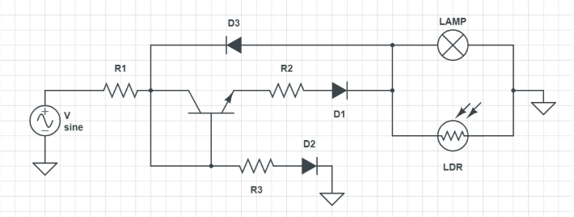
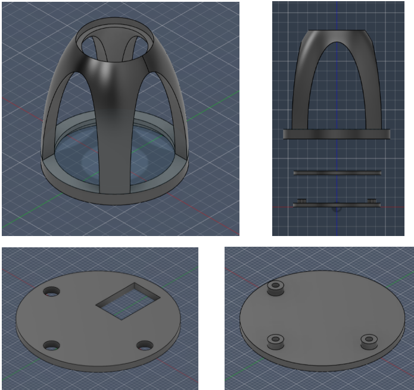
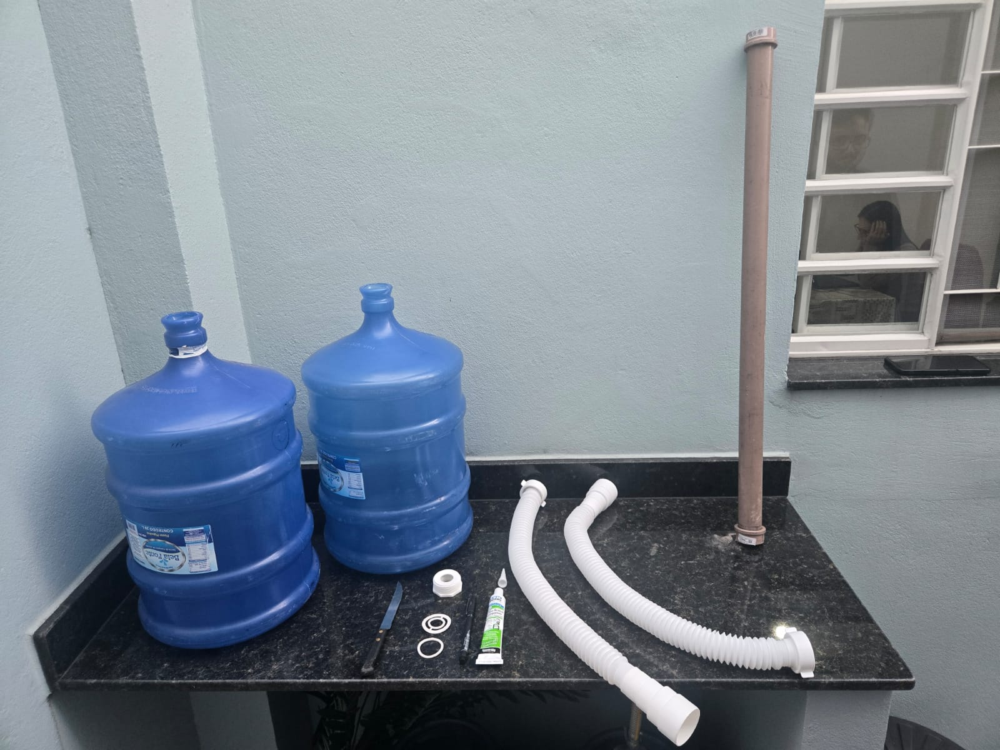
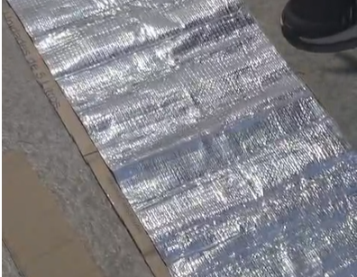

Passo a passo completo para construção, instalação e funcionamento dos projetos sustentáveis.

Modelo esquemático utilizado no sistema de controle da luminosidade.

Estrutura projetada para acomodar o circuito e permitir instalação no soquete.
3 diodos retificadores 1N4007, 1 transistor NPN D13009K, impressora 3D com filamento PLA, ferro de solda, estanho, fios de cobre encapados, lâmpada LED queimada, papel alumínio, soquete de lâmpada e Autodesk Fusion.
A primeira etapa consiste no desenvolvimento de um circuito envolvendo um resistor LDR em paralelo com uma lâmpada LED.
O circuito foi adaptado para alimentação em 110V AC, utilizando diodos para permitir funcionamento adequado.
A estrutura foi projetada no Autodesk Fusion, impressa em 3D e soldada sobre o dissipador de calor.

Galões usados como reservatórios para reaproveitamento da água da máquina de lavar.
2 galões de 20 litros usados e vazios, 2 sifões flexíveis, tubo PVC, silicone, fita veda-rosca, faca, caneta e suporte elevado.
Marque o diâmetro dos conectores dos sifões nas laterais superiores dos galões e faça as aberturas.
Acople os sifões, use fita veda-rosca e aplique silicone ao redor dos furos.
Coloque o primeiro galão elevado e conecte a mangueira da máquina ao gargalo. O sifão liga o primeiro galão ao segundo.
Conecte o segundo sifão ao tubo PVC e direcione o excesso para o ralo.

Painel removível feito com papelão e manta térmica aluminizada.
Caixas de papelão, manta térmica aluminizada autoadesiva, tesoura e fita métrica.
Meça a altura e largura da janela ou porta.
Recorte o papelão e a manta térmica conforme as medidas.
Aplique a manta no papelão, pressionando para evitar rugas e bolhas.
Posicione o painel com a face aluminizada voltada para o lado externo.
Bateria 12V, painel fotovoltaico 5W, controlador PWM, relé, sensor PIR, capacitor 100 µF, lâmpada LED 12V/9W, arandela, fios e fita isolante.
Conecte bateria e painel solar ao controlador.
Alimente o sensor PIR na saída do controlador e ajuste sensibilidade e tempo.
Conecte o sinal do PIR ao relé para acionar a lâmpada apenas quando houver movimento.